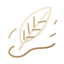

Les fondations magiques
Quatre sorts, un grimoire, une fiche de personnage, la progression scolaire et les tenues de sorcier.
UN NOUVEAU CHAPITRE DU ROLEPLAY
Au-delà des blocs, un monde de sorcellerie.
Entrez dans Arcanum, un projet de serveur Minecraft RP inspiré de l’univers de Harry Potter.
01 / L’UNIVERS
Une baguette. Un personnage. Tout un parcours à écrire. Arcanum pose les premières pierres d’une expérience de sorcellerie où le roleplay prend vie dans Minecraft.
Notre ambition : faire de chaque rencontre, de chaque cours et de chaque sort un chapitre de votre aventure. La magie et la progression existent déjà dans le prototype ; la vie de l’école reste à construire.
Donner vie à un sorcier et faire évoluer ses caractéristiques.
Composer son grimoire et apprendre à utiliser sa magie.
Bâtir, à terme, une histoire commune au fil du roleplay.
02 / L’ART DES SORTILÈGES
Quatre sorts jouables dans le prototype.
Quatre emplacements dans votre grimoire.
PRENEZ LA BAGUETTE
Faites naître la lumière.
Sélectionnez une carte ci-dessous pour découvrir un sort.
Une lueur dans l’obscurité.
Éclairez le chemin avec votre baguette.
La meilleure riposte ?
Un bouclier qui fait la différence.

Défiez la gravité.
Soulevez la créature ou le joueur visé.
Valeurs actuelles du prototype, susceptibles d’évoluer avec l’équilibrage.
03 / VOTRE AVENTURE
De la première à la septième année, façonnez votre personnage à travers une progression scolaire distincte de l’expérience Minecraft.
Vitalité, réserve magique, résilience ou puissance arcanique : répartissez vos points selon votre façon de jouer.
Organisez vos quatre emplacements de sorts sur votre baguette.
Trois points au départ, puis trois à chaque nouvelle année.
Braise, Marée, Sylve ou Ambre : quatre ensembles cosmétiques pour votre sorcier.
04 / LES PROCHAINS CHAPITRES
Arcanum est en développement.
Voici où nous en sommes.
Quatre sorts, un grimoire, une fiche de personnage, la progression scolaire et les tenues de sorcier.
Identité RP, cours, apprentissage progressif des sorts, interactions sociales et vocal de proximité font partie de l’horizon serveur.
La date d’ouverture et les modalités pour rejoindre le serveur ne sont pas encore annoncées. Elles seront précisées ici.